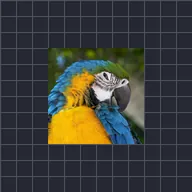

Rotation continue

Fait tourner le calque à vitesse constante ; une valeur négative inverse le sens.
Spin fait tourner un calque en rond à tr/min tours par minute. 60 correspond à un tour par seconde ; un nombre négatif le fait tourner dans l’autre sens. Idéal pour les roues de chargement, les ventilateurs et les disques.
Réglages
| Réglage | Type | Plage | Par défaut |
|---|---|---|---|
| tr/min | Nombre | De -3600 à 3600 | 60 |